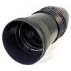

300/4 Sonnar东德卡尔蔡司镜头。是180/2.8 Sonnar 同族的兄弟镜头，这枚镜头的出现要晚于他的同族兄弟30年左右的时间，是一枚用途广泛的镜头，即可以用来拍摄人像也可以用来拍摄风光等题材。
我这支是斑马版的，P6口，86mm口径；做工不如180/2.8.色彩还原好；最大光圈时，锐度不错，没有紫边。脚架环，脚架座略显单薄.
色彩还原好；最大光圈时，锐度不错，高光没有发现紫边
做工有点松垮，脚架环，脚架座略显单薄
色彩还原好；最大光圈时，锐度不错，没有紫边。 脚架环，脚架座略显单薄。
色彩还原好；最大光圈时，锐度不错，没有紫边
脚架环，脚架座略显单薄
算是中幅好頭
耐用性差, 特別是腳架座 http://www2.xitek.com/showpicture.php?action=http://image2.xitek.com/forum/200508/1493/149318/149318_1124428602.jpg http://forum.xitek.com/showthread.php?threadid=82474 第 988 帖